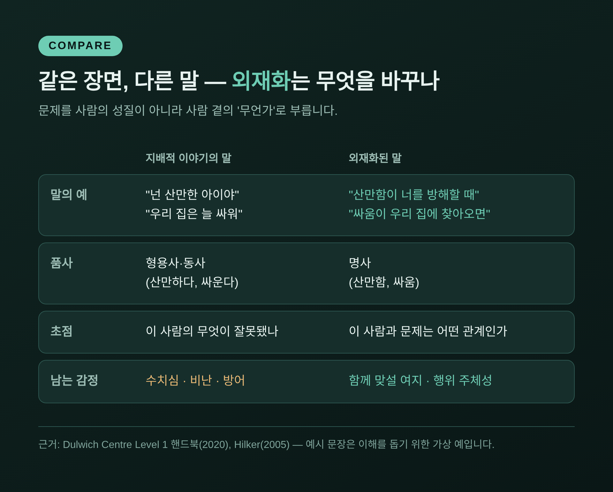
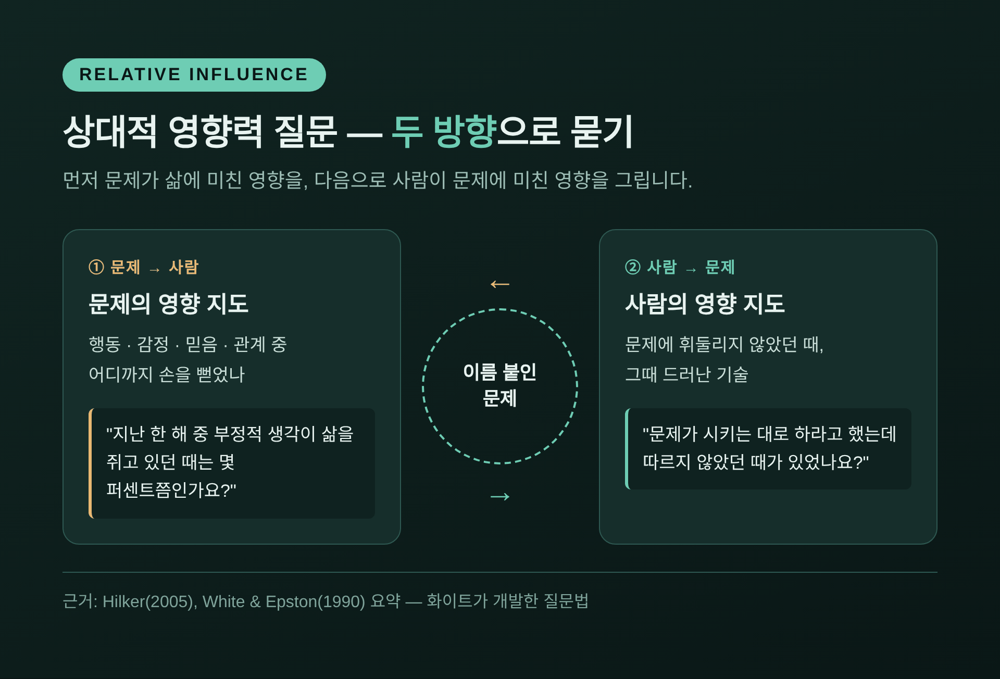
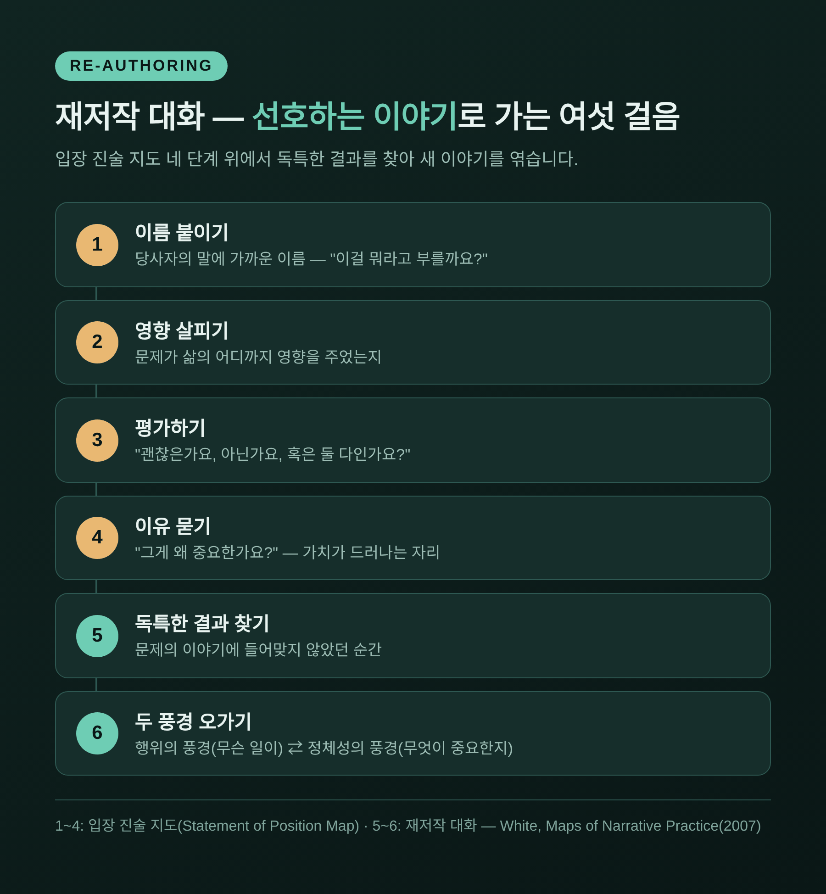
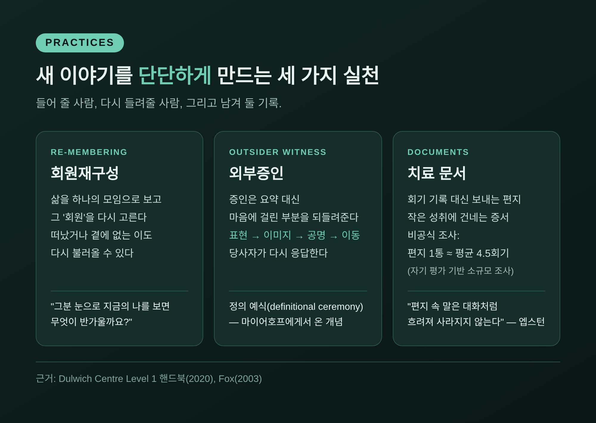
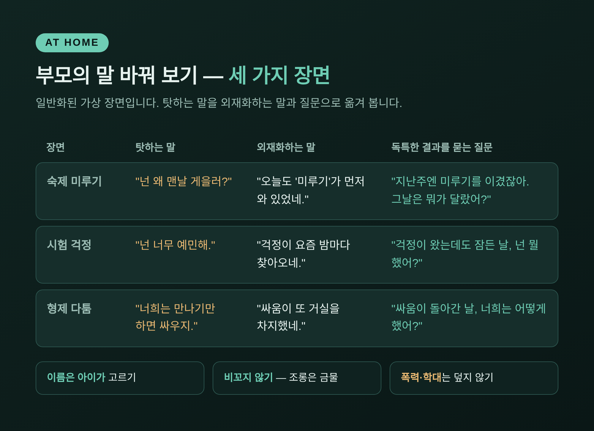

내러티브 치료의 외재화 대화 — 아이를 탓하지 않고 문제와 맞서는 법

오늘은 내러티브 치료의 외재화 대화에 대해 이야기해 보려 합니다. "사람이 문제가 아니라 문제가 문제다"라는 한 문장이 상담실과 가정에서 어떻게 쓰이는지, 그리고 그 근거가 어디까지인지 차례로 정리했습니다.
세 줄 요약 1. 외재화는 문제를 사람의 성격이 아니라 '사람 바깥의 것'으로 이름 붙여, 사람과 문제의 관계를 다시 보게 하는 대화법입니다. 2. 문제가 없던 순간(독특한 결과)을 실마리 삼아 새 이야기를 쓰는 재저작, 증인 앞에서 그 이야기를 단단히 하는 외부증인 실천, 편지·증서 같은 치료 문서가 뒤를 받칩니다. 3. 사례 보고와 일부 연구에서 긍정적 신호가 있지만, 대규모 고품질 연구는 아직 부족합니다. 폭력·학대처럼 책임이 분명한 문제에는 그대로 적용하지 않습니다.
## ■ 화이트와 엡스턴, 이야기로 삶을 보다
내러티브 치료는 1970~80년대에 두 사람이 다듬었습니다. 호주의 사회복지사 마이클 화이트, 그리고 뉴질랜드의 데이비드 엡스턴입니다. 화이트는 1983년 애들레이드에 덜위치 센터를 세웠고, 2008년 세상을 떠날 때까지 이 접근을 이끌었습니다.
두 사람의 대표 공저는 1990년 뉴욕 노턴 출판사에서 나온 『Narrative Means to Therapeutic Ends』입니다. 한 해 앞서 호주에서 『Literate Means to Therapeutic Ends』라는 이름으로 먼저 소개됐습니다. 훗날 화이트는 2007년 『Maps of Narrative Practice』에서 대화의 '지도'들을 정리합니다.
출발점은 단순합니다. 사람은 겪은 일을 이야기로 엮어 삶의 의미를 만든다는 것입니다. 상담실을 찾는 사람들은 대개 문제로 가득 찬 이야기, 즉 '지배적 이야기'에 눌려 있습니다. "나는 원래 게으르다", "우리 아이는 늘 말썽이다" 같은 이야기입니다.
이 생각에는 여러 사상이 겹쳐 있습니다. 권력과 담론을 다룬 미셸 푸코, 이야기와 의미를 연구한 제롬 브루너, 공동체의 의례를 관찰한 인류학자 바버라 마이어호프 등입니다. 그래서 내러티브 치료는 문제를 개인의 결함보다는 문화와 관계 속에서 만들어진 것으로 바라봅니다.
## ■ "사람이 문제가 아니라 문제가 문제다"
외재화(externalizing)는 이 접근의 가장 알려진 실천입니다. 덜위치 센터가 첫머리에 두는 문장이 바로 "The person is not the problem, the problem is the problem."입니다.
방법은 말의 품사를 바꾸는 데서 시작합니다. "우울하다"는 '우울'이 되고, "싸운다"는 '싸움'이 됩니다. 형용사와 동사가 명사가 되는 순간, 문제는 내 안의 성질이 아니라 내 곁에 있는 무언가가 됩니다.
초점도 함께 이동합니다. 예전엔 "이 사람의 무엇이 잘못됐나"를 물었습니다. 외재화 대화에서는 "이 사람과 그 문제는 어떤 관계인가"를 묻습니다.
이름은 상담자가 정하지 않습니다. 당사자의 말에 가까운 이름을 함께 찾습니다. 노르웨이의 한 상담 사례에서는 소년이 자신의 급한 성미를 고유한 단어로 부르자, 상담자도 끝까지 그 단어를 썼다고 합니다.

이 방식이 노리는 것은 수치심과 비난을 덜어내는 일입니다. 문제와 사람이 붙어 있으면 문제를 공격하는 것이 곧 사람을 공격하는 일이 됩니다. 떼어 놓으면, 사람은 문제에 맞서는 쪽에 설 수 있습니다.
## ■ '교활한 똥(Sneaky Poo)'이 남긴 장면
외재화를 설명할 때 빠지지 않는 사례가 있습니다. 화이트가 1984년 논문에서 다룬, 유분증을 겪는 아이와 부모 세 식구의 이야기입니다. 흔히 여섯 살 소년의 사례로 소개됩니다.
아이는 바지에 실수를 하고, 그것을 몰래 숨기곤 했습니다. 아이는 또래와 멀어졌고, 어머니는 부모로서의 자신을 의심했고, 아버지는 깊이 당혹스러워했습니다. 집 안 전체가 화이트의 표현대로 '통제할 수 없는 사건의 눈사태'에 갇혀 있었습니다.
화이트는 아이에게 이렇게 물었다고 전해집니다. "너를 곤란하게 만드는 그 지저분한 것을 뭐라고 부를까?" 그렇게 붙은 이름이 'Sneaky Poo', 교활한 똥입니다.
다음 질문은 가족 모두를 향했습니다. Sneaky Poo가 각자의 생활과 관계에 어떤 영향을 주었는지 물었습니다. 이어서 반대 방향으로 물었습니다. 아이가 Sneaky Poo에게 속지 않고 '제자리에 돌려놓은' 적은 언제였는지.
가족은 자신들이 공동의 적에게 함께 눌려 왔다는 것을 보게 됐습니다. 가족치료자 칼 톰은 1989년 글에서 이 사례를 소개하며, 비난과 죄책감이 줄자 아이와 부모가 힘을 합쳐 Sneaky Poo에 맞설 수 있었다고 적었습니다. 아이는 '문제아'에서 '문제와 싸우는 사람'이 된 셈입니다.
## ■ 상대적 영향력 질문 — 두 방향으로 묻기
위 사례에서 쓰인 질문법에는 이름이 있습니다. 상대적 영향력 질문(relative influence questioning)입니다.
첫 번째 방향은 문제가 사람에게 미친 영향을 그리는 일입니다. 행동, 감정, 믿음, 관계 가운데 어디까지 문제가 손을 뻗었는지 살핍니다. "지난 한 해 중 부정적인 생각이 삶을 쥐고 있던 때는 몇 퍼센트쯤인가요?" 같은 질문입니다.
두 번째 방향은 거꾸로, 사람이 문제에 미친 영향을 그리는 일입니다. 문제에 휘둘리지 않았던 때를 찾다 보면, 본인도 몰랐던 기술이 드러납니다.

화이트는 이 과정을 '입장 진술 지도'로 정리했습니다. 문제에 이름을 붙이고, 영향을 살피고, 그 영향이 괜찮은지 평가하고, 왜 그렇게 평가하는지 이유를 묻는 네 단계입니다. "이게 괜찮으세요, 아니면 아니세요, 혹은 둘 다인가요?" "그게 왜 중요하세요?" 평가와 이유를 묻는 질문에서 그 사람이 소중히 여기는 가치가 처음 모습을 드러냅니다.
## ■ 독특한 결과에서 다시 쓰는 이야기
지배적 이야기에 들어맞지 않는 사건을 '독특한 결과(unique outcomes)'라고 부릅니다. "늘 화를 낸다"는 이야기 속에서도, 화가 찾아왔는데 다른 길을 고른 저녁은 있게 마련입니다.
이것은 상담자가 지정해 주는 것이 아닙니다. 당사자가 "그래, 그건 달랐다"고 알아볼 때 힘을 얻습니다. 처음에는 아주 희미합니다. 대화를 거듭하며 두꺼워지고 과거의 뿌리를 얻습니다.
재저작(re-authoring) 대화는 이 실마리를 이야기로 엮는 작업입니다. 화이트는 두 개의 풍경을 오가라고 했습니다. 하나는 '행위의 풍경', 즉 무슨 일이 어떤 순서로 있었는지입니다. 다른 하나는 '정체성의 풍경', 즉 그 일이 나에게 무엇이 중요한지 말해 주는지입니다.
"그날 어떤 걸음을 내디딘 건가요?"라고 묻고 나서 "그 걸음은 당신이 무엇을 소중히 여긴다는 걸 보여줄까요?"라고 이어 묻는 식입니다. 질문에는 '어쩌면', '아마도' 같은 말이 자주 들어갑니다. 확신을 조금 풀어 둘 때 새 이야기가 들어올 틈이 생기기 때문입니다.

## ■ 회원재구성, 외부증인, 그리고 편지 한 통
새 이야기는 혼자 간직하면 쉽게 흐려집니다. 내러티브 치료는 그 이야기를 들어 줄 사람과 기록을 마련합니다.
회원재구성(re-membering) 대화는 마이어호프의 생각에서 왔습니다. 삶을 하나의 모임으로 보고, 그 모임의 '회원'을 다시 고르는 대화입니다. 세상을 떠났거나 곁에 없는 사람도 다시 불러올 수 있습니다. "이 가치를 가장 먼저 알아볼 사람은 누구일까요?" "그분 눈으로 지금의 나를 보면 무엇이 반가울까요?"
외부증인(outsider witness) 실천은 '정의 예식'이라는 자리에서 이루어집니다. 당사자가 자신의 이야기를 들려주면, 증인들은 전체를 요약하지 않고 마음에 걸린 부분을 다시 들려줍니다. 반응은 네 갈래로 안내됩니다. 어떤 표현이 눈에 띄었는지, 어떤 그림이 떠올랐는지, 내 삶의 무엇과 공명했는지, 들은 뒤 나는 어디로 옮겨졌는지. 당사자는 그 되들려줌을 다시 듣고 응답합니다.
치료 문서는 대화를 종이에 붙잡아 두는 방법입니다. 화이트와 엡스턴은 회기 기록 대신 내담자에게 편지를 보냈고, 작은 성취에 증서를 건넸습니다. 엡스턴은 "편지 속 말은 대화처럼 흐려져 사라지지 않는다"고 했습니다.
흥미로운 수치도 전해집니다. 엡스턴과 화이트의 비공식 조사에서 내담자들은 편지 한 통을 평균 4.5회기의 가치로 평가했습니다. 1994년 미국의 한 의료기관에서 한 소규모 조사에서는 평균 3.2회 면담의 가치로 답했습니다. 다만 둘 다 내담자의 자기 평가를 모은 작은 조사라는 점은 함께 기억해 두는 편이 좋겠습니다.

## ■ 집에서 써 보는 외재화 말하기
외재화는 상담실 밖에서도 쓸 수 있습니다. 청소년·가족 상담에서 부모에게 자주 권하는 연습을 일반화된 가상 장면으로 옮겨 보겠습니다.
장면 1. 숙제를 미루는 중학생
- 탓하는 말: "넌 왜 맨날 이렇게 게을러?"
- 외재화하는 말: "오늘도 '미루기'가 먼저 와 있었네. 그 녀석은 보통 언제 제일 세게 붙잡아?"
- 이어지는 질문: "지난주 목요일엔 미루기를 이기고 먼저 시작했잖아. 그날은 뭐가 달랐어?"
장면 2. 시험을 앞두고 잠 못 드는 고등학생
- 탓하는 말: "넌 너무 예민해서 문제야."
- 외재화하는 말: "걱정이 요즘 밤마다 찾아오는 것 같네. 걱정은 너한테 주로 뭐라고 속삭여?"
- 이어지는 질문: "걱정이 왔는데도 잠들었던 날이 있었어? 그때 넌 뭘 했어?"
장면 3. 형제 사이의 잦은 다툼
- 탓하는 말: "너희 둘은 만나기만 하면 싸우지."
- 외재화하는 말: "싸움이 또 우리 집 거실을 차지했네. 싸움이 끼어들면 우리 집에서 뭐가 사라지지?"
- 이어지는 질문: "싸움이 오다가 돌아간 날도 있었잖아. 그날 너희 둘은 어떻게 한 거야?"

몇 가지를 함께 지키면 좋겠습니다. 이름은 가능하면 아이가 고르게 합니다. 부모가 붙인 별명보다 아이의 말이 오래 갑니다. 비꼬듯 쓰지 않습니다. "또 그 미루기 귀신이냐"는 외재화가 아니라 조롱입니다. 아이의 대답을 기다립니다. 질문은 정답을 끌어내는 도구가 아니라 아이의 이야기를 듣는 통로입니다.
그리고 분명한 선이 있습니다. 폭력이나 학대는 외재화로 덮지 않습니다. 화이트는 폭력을 저지른 남성들과 작업할 때 폭력 자체를 바깥의 존재로 만들지 않았습니다. 대신 폭력을 지탱하는 지배의 태도와 관행을 드러냈고, 행동의 책임은 본인에게 있다고 보았습니다. 피해자의 안전이 언제나 먼저였습니다. "화가 그랬다"는 말이 책임을 피하는 핑계로 쓰인다면, 그것은 외재화를 잘못 쓴 것입니다.
## ■ 효과는 어디까지 확인됐을까
좋은 점만 말하면 공정하지 않습니다. 근거의 수준을 솔직히 정리해 두겠습니다.
| 근거 | 내용 | 한계 |
|---|---|---|
| 초기 리뷰 (Etchison & Kleist, 2000) | 효과 연구가 초기 단계라고 평가 | 질적 성과를 중시해 양적 연구와 잘 맞지 않음 |
| 메타분석 (Hu 외, 2024) | 신체질환 성인 54개 무작위 대조연구, 4,879명에서 우울 증상 감소 | 52개가 한 나라 연구, 이질성 매우 큼, 근거 확실성 낮음~매우 낮음 |
| 체계적 검토 (Ekinci & Tokkaş, 2024) | 집단치료 19편에서 아동·청소년·성인 모두 효과 보고 | 초록 수준 정보, 검색 범위 제한 |
| 임상 보고 (노르웨이, 2006) | 어린아이 배변 문제에 응용, 약 80%가 2~3회 상담 후 해결 | 통제 연구가 아닌 임상 경험 |
2024년 메타분석은 의미 있는 수치를 보여 줬습니다. 하지만 연구 대부분이 한 나라에서 나왔고, 출판 편향의 흔적이 있었으며, 일차 우울증 환자를 다룬 두 연구에서는 유의한 효과가 나오지 않았습니다. 이론 쪽 비판도 있습니다. 대인관계의 맥락을 소홀히 하거나, 상담자의 가치관이 스며들 수 있다는 지적입니다.
정리하면 외재화는 '검증이 끝난 치료법'이라기보다, 근거가 쌓여 가는 중인 유망한 대화 방식에 가깝습니다.
정리하면 이렇습니다. 외재화는 문제를 가볍게 여기자는 말이 아닙니다. 문제를 정확히 바라보기 위해, 사람과 문제 사이에 한 뼘의 거리를 두자는 제안입니다.
"사람이 문제가 아니라 문제가 문제다."
그 한 뼘이 생기면 아이와 부모는 서로를 겨누던 손을 내리고 같은 쪽에 설 수 있습니다. 오늘 저녁 아이에게 건넬 첫 질문이 무엇이 좋겠냐고 물으신다면, "그 녀석을 뭐라고 부를까?"부터 시작해 보시라고 답하겠습니다.
전문 상담이 필요할 때 이 글은 내러티브 치료를 이해하기 위한 일반 정보이며, 진단이나 치료를 대신하지 않습니다. 아이나 가족의 어려움이 몇 주 이상 이어지거나 학교·일상생활에 지장을 준다면 청소년상담복지센터, 정신건강복지센터, 자격을 갖춘 상담 전문가와 상의하시길 권합니다. 자해나 자살에 대한 생각, 폭력이 있는 상황이라면 지체하지 말고 109(자살예방상담), 112, 119 등 긴급 도움을 받으시기 바랍니다.
### 참고 자료
- Michael White (psychotherapist) — Wikipedia
- Narrative therapy — Wikipedia
- Paré & Sawatzky (1993), 『Narrative Means to Therapeutic Ends』 서평, Canadian Journal of Counselling
- White & Epston (1990) 발췌, Taylor & Francis
- Karl Tomm (1989), Externalizing the Problem and Internalizing Personal Agency
- Michael White, Pseudo-Encopresis — Dulwich Centre
- Hilker (2005), Making Trouble for Problems
- Michael White, Re-Authoring Conversations — Dulwich Centre
- Dulwich Centre Level 1 Online Handbook (2020)
- Geir Lundby, Creating different versions of life — Dulwich Centre
- Michael White, The Responsibilities — Dulwich Centre
- Hugh Fox (2003), Using therapeutic documents: a review
- Hu 외 (2024), 신체질환 성인 우울 증상에 대한 내러티브 치료 메타분석
- Etchison & Kleist (2000), Review of Narrative Therapy: Research and Utility
- Ekinci & Tokkaş (2024), A Systematic Review of Narrative Therapy
- Gerhardsen (2006), 어린아이 대상 외재화 — Tidsskrift for Norsk Psykologforening
#내러티브치료 #외재화 #외재화대화 #마이클화이트 #재저작 #독특한결과 #가족상담 #청소년상담 #부모대화법